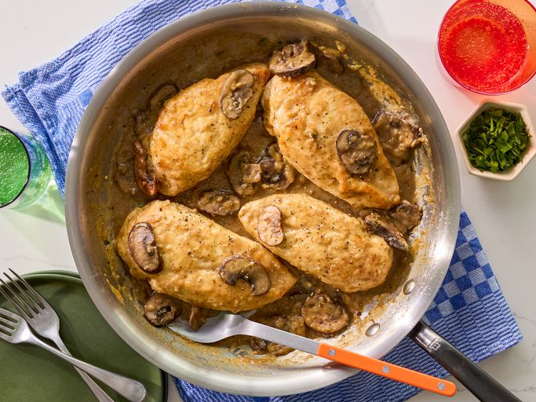

Home
Chicken Marsala

🍗 Description
This is a classic Italian-style dish featuring tender, thin-cut chicken breasts pan-fried until lightly golden, then simmered with mushrooms in a rich, slightly sweet Marsala wine sauce. It's elegant enough for dinner guests yet easy enough for a weekday meal.
Ingredients
- Boneless, skinless chicken breast halves (pounded thin)
- All-purpose flour
- Salt
- Ground black pepper
- Dried oregano
- Butter
- Olive oil
- Sliced fresh mushrooms
- Marsala wine
- Cooking sherry (optional, per recipe variation)
- Chicken stock or broth
Steps
- In a shallow dish, whisk together flour, salt, pepper, and dried oregano.
- Dredge the chicken pieces in the seasoned flour mixture, shaking off excess.
- Heat olive oil and butter in a large skillet over medium heat.
- Cook the chicken until lightly browned on both sides. Remove and set aside.
- Add mushrooms to the skillet and sauté until softened.
- Pour in Marsala wine (and sherry if used), scraping the pan to release browned bits.
- Return the chicken to the skillet, cover, and simmer for about 10 minutes, flipping once, until fully cooked through.
- When juices run clear and chicken is no longer pink, serve hot with the sauce spooned over top.